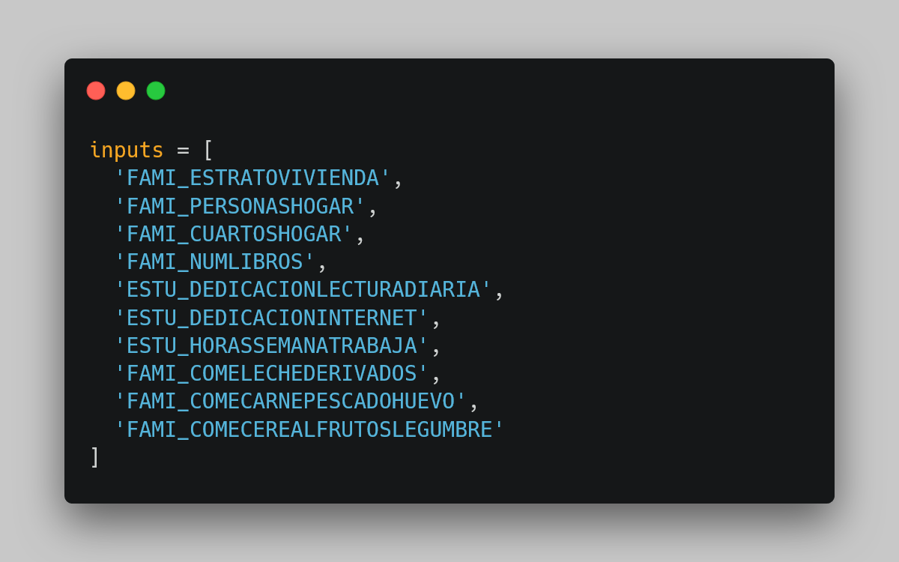
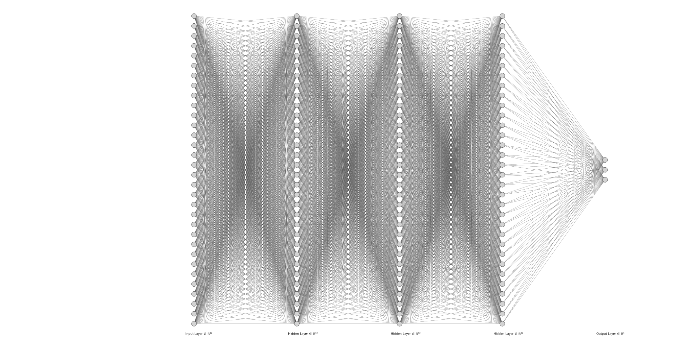

Machine Learning Model Selection II
In this second model we develop a Multi-Layer Perceptron (MLP) models that can predict students' overall and subject-specific ICFES test performance based on their socioeconomic characteristics. The secondary objective is to understand the relationship between these characteristics and test scores by developing such models.
We chose MLPClassifier as our machine learning model. For its development, we used variables such as


Performance on the test is classified into three levels:
low (scores below 36)
medium (scores between 36-65)
high (scores above 65).
For overall performance, the criteria are:
low (scores below 200)
medium (scores between 200-300)
high (scores above 300).
We chose these variables as they are all numerical, relevant for our analysis, and fitting for the type of model we have picked. Having checked for the correlation between them, we found they are not linearly dependent.
For the validation metric, we will be using:
- Accuracy: The result of dividing the number of accurate predictions by the total number of predictions made. The closer the value is to 1, the more accurate (better) the model is.
- Precision: Percentage of correct positive predictions relative to total positive predictions.
- Recall: Percentage of correct positive predictions relative to total actual positives.
- F1-score: A weighted harmonic mean of precision and recall. The closer the value is to 1, the better the model.
Results and Conclusions
with the validation metrics, comparing the performance of both models, the accuracy, precision and recall are very similar, although with this second MLP model there is a slight increase of about 5% with respect to the first model, except for one where the value of 0 is still at 0 for the prediction.
From the analysis of coefficients, we conclude that:
- all the conclusions of the first model are valid for this second model that by not varying so much the validation metrics
- it would be necessary to retouch the hyperparameters of the network to see changes in the results
- The number of rooms and people in the household, as well as the inclusion of meats, cereals, grains, and milk-derivates in their diet exhibit minimal impact on performance prediction.
- The social stratum has a low influence on performance level predictions across subjects, with the exception of English.